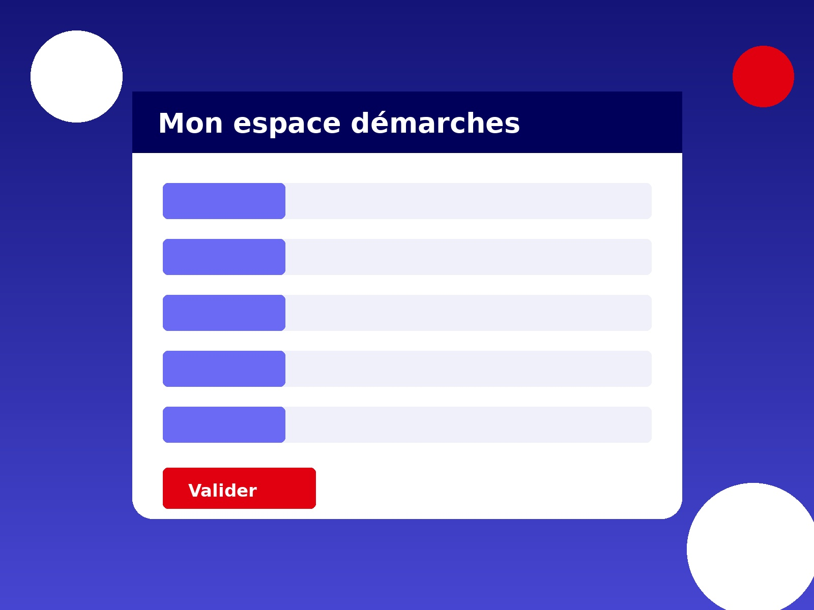

Élections 2026 : les dates clés de l'inscription
Retrouvez le calendrier complet pour vous inscrire à temps sur les listes électorales.
Demandez une carte d'identité, inscrivez-vous sur les listes électorales ou obtenez un acte de naissance — sans vous déplacer, à votre rythme.

Faites votre première demande ou un renouvellement de carte d'identité. Photo et justificatif de domicile à téléverser.
Commencer la démarcheInscrivez-vous pour pouvoir voter aux prochaines élections. Des exemples de pièces justificatives vous guident pas à pas.
Commencer la démarcheObtenez une copie ou un extrait d'acte de naissance, à usage personnel ou administratif.
Commencer la démarche
Retrouvez le calendrier complet pour vous inscrire à temps sur les listes électorales.
Les horaires d'accueil évoluent à partir du mois prochain dans plusieurs antennes.
Moins de pièces justificatives demandées pour certaines démarches courantes.
Notre assistance est disponible par téléphone et par messagerie pour vous accompagner dans vos démarches. Vous pouvez aussi consulter les questions fréquentes pour chaque service depuis sa page de présentation.